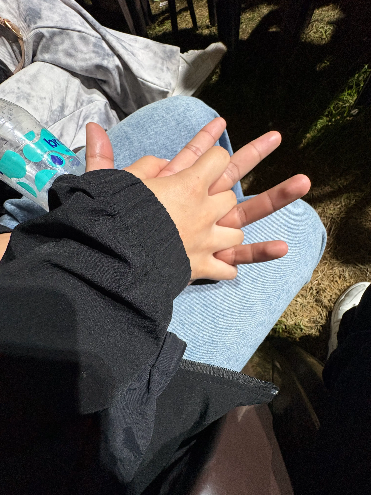
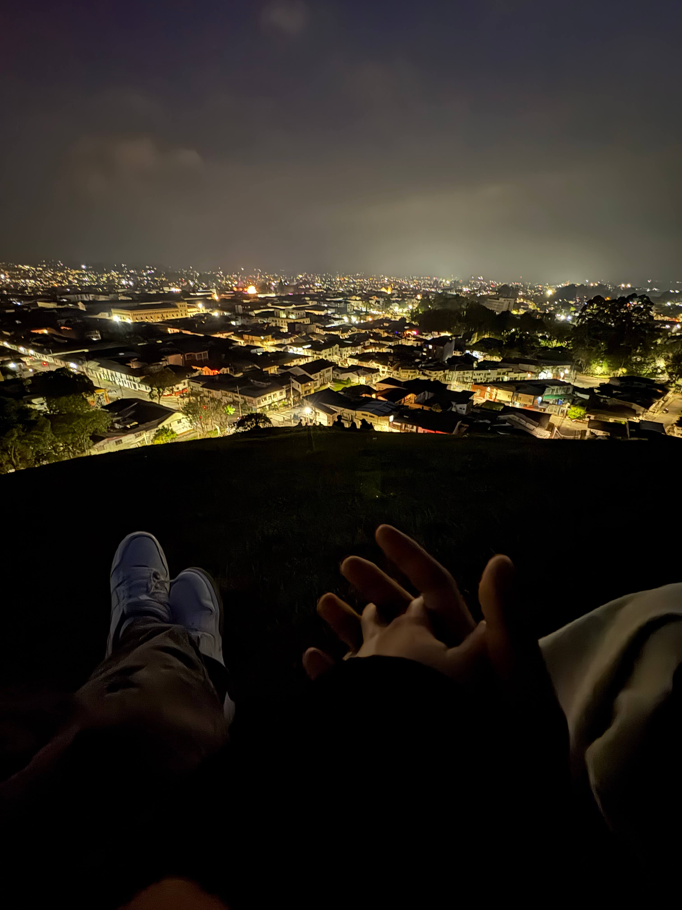
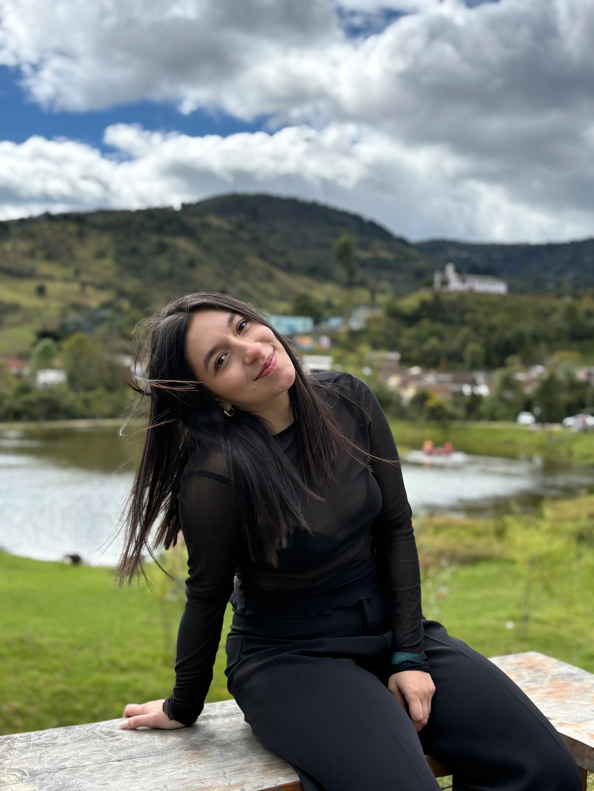

Una historia para nosotros
No todas las historias terminan
cuando creemos.
El reencuentro
Algunas rutas se alejan
para aprender a volver.
Las señales
La noche dejó tres destellos.
El último abrió el camino.
Volver a empezar
Y, sin darnos cuenta,
todo volvió a comenzar.
Una conversación.Una sonrisa.Una cita.Un abrazo.



Lo cotidiano
No fueron los lugares.
Fueron los momentos.
La felicidad estaba en lo cotidiano.
Elegirnos
No hizo falta prometer el mundo.
Bastó con elegirnos.
Cerca a la distancia
Hay kilómetros entre nosotros.
Pero nunca han podido alejarnos.
San Lorenzo
Silvia
Para ti
Hay cosas que solo
podía decirte así.
Siempre